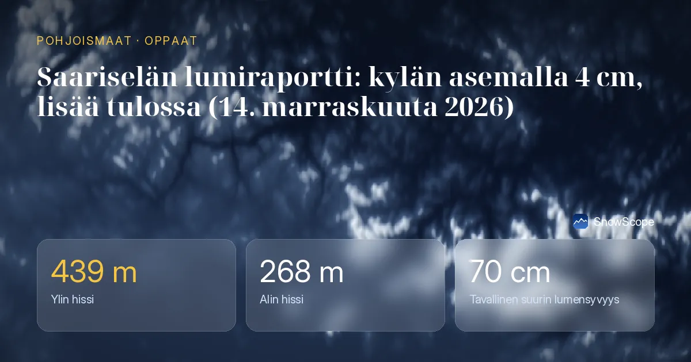
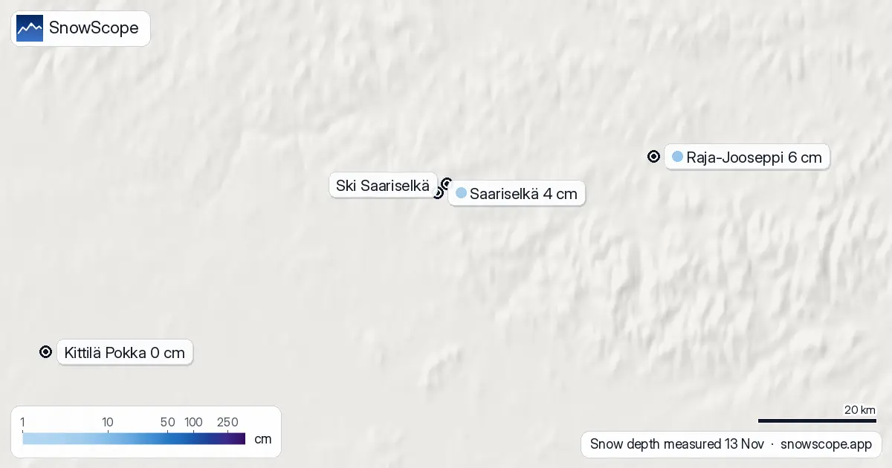

Saariselän lumiraportti: kylän asemalla 4 cm, lisää tulossa (14. marraskuuta 2026)
13. marraskuuta aamulla Inarin Saariselkän matkailukeskuksen säähavaintoasema, 2 km päässä rinteistä 304 m:n korkeudella, mittasi 4 cm lunta. Lumensyvyys on pysynyt vakaana viisi päivää, kylmään jäätynyt mutta ei kasvanut. Seitsemän päivän sisällä SnowScope osoittaa, että noin 22 cm lunta on saapumassa.
Katso kohteen Ski Saariselkä lumiennuste reaaliajassa SnowScope-sovelluksessaLumensyvyys, puuterihälytykset ja 3D-kartta, ilmaiseksi.

Mitä asemat näyttävät nyt
Virallinen asema kylässä on pysynyt 4 cm:n tasolla 9. marraskuuta lähtien. Joka aamu sama luku; joka yö kylmä tarpeeksi lukitsemaan sen paikalleen. Tämä vakaus on hyvä uutinen: lumikerta ei häviä lämpimään päivään. Se ei ole vielä pohja, mutta se merkitsee talven alkua.
Lähellä olevat asemat kertovat paikoin epätasaisen tilanteen. Raja-Jooseppi, 35 km itään 186 m:n korkeudella, näyttää 6 cm. Vuotso, 40 km etelään 250 m:n korkeudella, näyttää vielä 0 cm. Pokka, 74 km lounaaseen 276 m:n korkeudella, myös 0 cm. Varhaisen kauden lumi usein putoaa yhdessä laaksossa ja ohittaa toisen; Saariselkä on taskussa, joka on alkanut täyttyä.

Seuraava viikko
Noin 5 cm putoaa seuraavan 24 tunnin aikana, sitten vielä 5–6 cm seuraavana päivänä. Viikon loppuun mennessä SnowScope näyttää yhteensä noin 22 cm uutta lunta. Lumi putoaa kaikissa korkeuksissa; sadetta ei odoteta edes järvien korkeudelle. Muiden ennusteiden vaihteluväli on laajempi—jopa 25–45 cm—mutta kaikki ovat yhtä mieltä lumesta, kaikkiin korkeuksiin.
Nollaraja pysyy kylän alapuolella koko ajan. Varhaisen kauden lumi usein istuu löysästi sen alla olevalla; jokainen uusi kerros auttaa pohjan liittämistä yhteen. Viikon loppuun mennessä kylän aseman pitäisi näyttää 20-luvun puoliksi, edelleen ohut mutta paljon lähempänä mitä sesonki tarvitsee.
Marraskuun kuvio
Viimeisten 46 talven aikana tällä alueella 14. marraskuuta ei ole syvä päivä. Tavallinen lumensyvyys tuolla päivämäärällä on 17 cm. 21. marraskuuta se nousee 22 cm:iin, kuukauden viimeisellä päivällä 27 cm:iin. Todellinen kasautuminen alkaa joulukuussa, kun aurinko tuskin nousee ja pakkanen on keskeytymätön.
Tyypillinen talvi täällä huipentuu noin 70 cm:iin, usein maaliskuussa. Maa pysyy valkoisena noin 212 päivää. Suuntaus vuosikymmenten aikana on tasainen: ensimmäisen 15 talven keskiarvo oli huipulla 74 cm, viimeisen 15 talven keskiarvo 70 cm. Varhainen lumi on ohut, keskitalven lumi on luotettavaa.
Mitä 4 cm tarkoittaa tunturilla
Hiihtorinteen pohjalla 4 cm peittää sammaleen ja matalan ruohon mutta jättää kivet paljaaksi. 171 m pystysuora korkeus vie sinut ylös 171 m, missä lumi on hiukan syvempää ja kovempaa altistumisen takia. Hiihtäminen näin ohuella pohjalla vaatii tietoa sen alla olevasta maasta; pinnan lähellä olevat kivet ovat todellinen riski.
Kylän yläpuolella pääpolut Urho Kekkosen kansallispuistossa ovat käveltävissä talvikengillä tämän viikonlopun yli. Ohut lumi riittää tuntemaan talven, ei riitä hiihtöjen tarpeisiin. Ensi viikon ennusteen jälkeen maastolaiturijat löytävät ensimmäiset kunnostetut silmukat kohteen ympäriltä.
Milloin avajaiset alkavat
Ski Saariselkä on asettanut 21. marraskuuta 2026 avajaistavoitteekseen, joilla päivittäiset ajot suunnitellaan 20. joulukuuta asti. Kartoitettu maasto on vaatimaton: 9 km rinteistä ja 2 hissiä, yksi jokaiselle tunturin osalle. Näin pieni hiihtokeskus voi käyttää tehokkaasti jokaisen putkeen lankeavan uuden lumen sentimetriä.
Ensi viikon ennuste antaa avajaisille noin 20–25 cm pohjan. Se on ohvempi kuin menneet talvet marraskuun puolivälissä, mutta riittää pienelle rinnelle aktiivisen kunnostuksen kanssa. Seuraa päivittäistä päivitystä täällä SnowScope:ssa ja kohteen omalla sivustolla vahvistusta varten.
Valo ja pakkanen
68. pohjoisleveysasteella 14. marraskuuta merkitsee siirtymistä kohti napayötä. Aurinko nousee puolessapäivällä ja laskee puolessapäivällä; päivänvalo on tärkein tekijä, joka määrittelee, milloin voit hiihtää, ei lumensyvyys. Ota taskulamppu mukaan kaikkiin iltapäivän retkille.
Ilman lämpötila pysyy hyvin alle nollan yöllä ja päivällä. 2–3 cm, joka putosi viime viikon aikana, ei koskaan sulanut; ennustelumi ei myöskään. Tämä luotettavuus on Saariselkän vahvuus varhaisen kauden aikana: kun lumi saapuu, se jää.
Vinkkejä laskijoille
- Tarkista virallisen lumivyöryennusteen EAWS:sta ennen mitään mäkiä tai pois valkeista rinteistä Urho Kekkosen kansallispuistossa, joka alkaa kylän reunalta.
- Ohuelle varhaisen kauden lumelle kuten tämä, tutki pohjan huolellisesti, jos lähdet valkeista rinteistä pois; kivet 4 cm:n alla ovat todellinen vaara.
- Ensi viikon lumensateen jälkeen odota ensimmäisiä maastolaiturin silmukoita kylän ympäri. Kohteen sivusto ilmoittaa kunnostetusta reitistä.
- Napayö saapuu nopeasti; suunnittele retket lyhyelle päivänvaloon, suunnilleen klo 10–14 marraskuun lopulla.
- Jos suunnittelet matkaa marraskuun lopulle, ota kerroksittain pukeutuvat vaatteet –15––20 °C:lle: näillä leveysasteilla kylmä on tasainen kauden alettua.
Näistä luvuista
Hiihtokeskusten lumensyvyydet ovat syvin lumi keskuksen ylärinteillä näytettynä päivänä; ne ovat arvioita alueelle, eivät mittaus yhdessä pisteessä. Ennusteet voivat muuttua. Lue aina virallinen lumivyöryennuste ennen rinteiden ulkopuolelle lähtöä.
Viralliset lumivyöryennusteet: EAWS – European Avalanche Warning Services
Viittaa tähän raporttiin
Tutkimukseen, opetukseen tai mediaan: luvut ja kaaviot ovat vapaasti käytettävissä CC BY 4.0 -lisenssillä tällä lähdeviitteellä.
SnowScope (2026), Saariselän lumiraportti: kylän asemalla 4 cm, lisää tulossa (14. marraskuuta 2026), https://snowscope.app/blog/fi/2026/11/saariselka-snow-report-14-november-2026.html, luettu 2026-11-14
SnowScope (Atlas Labs). (2026, November 14). Saariselän lumiraportti: kylän asemalla 4 cm, lisää tulossa (14. marraskuuta 2026). SnowScope snow reports. https://snowscope.app/blog/fi/2026/11/saariselka-snow-report-14-november-2026.html
BibTeX
@misc{snowscope2026saariselkasnowreport14no,
author = {{SnowScope (Atlas Labs)}},
title = {Saariselän lumiraportti: kylän asemalla 4 cm, lisää tulossa (14. marraskuuta 2026)},
year = {2026},
month = nov,
howpublished = {\url{https://snowscope.app/blog/fi/2026/11/saariselka-snow-report-14-november-2026.html}},
note = {Published 2026-11-14 17:09 UTC; accessed 2026-11-14}
}· CC BY 4.0 · Menetelmät, data ja työkalut →
Ski Saariselkä: lumi ja lämpötila korkeuden mukaan, tämä talvi ja viime talvi (työkalut) →
Seuraa: Ski Saariselkä
Ilmainen: viesti, kun uutta lunta on tulossa, ja ennuste joka aamu.